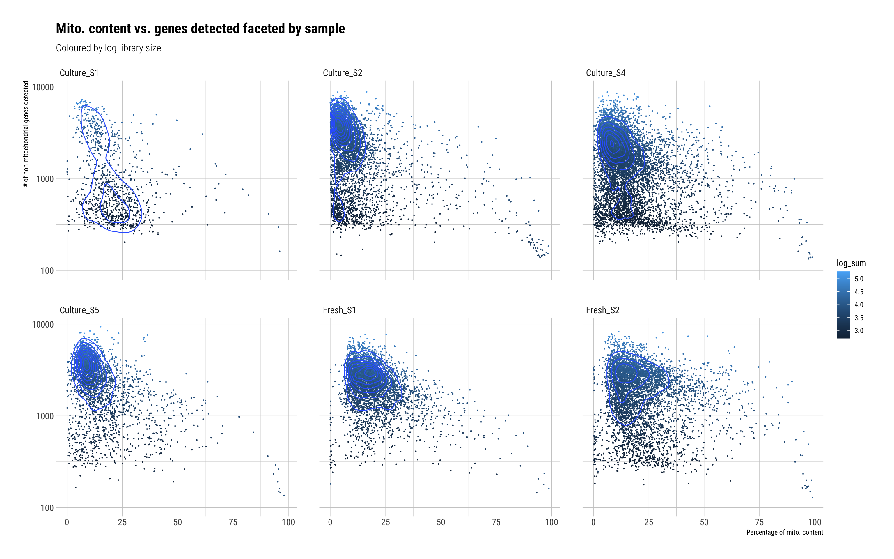

Comparison of the ‘new’ skin tissue protocol with skin samples 1,2,4 & 5
Dominique Paul
2021-12-28
Last updated: 2021-12-28
Checks: 5 1
Knit directory: 02_Protocol/analysis/
This reproducible R Markdown analysis was created with workflowr (version 1.6.2). The Checks tab describes the reproducibility checks that were applied when the results were created. The Past versions tab lists the development history.
Great job! The global environment was empty. Objects defined in the global environment can affect the analysis in your R Markdown file in unknown ways. For reproduciblity it’s best to always run the code in an empty environment.
The command set.seed(20211228) was run prior to running the code in the R Markdown file. Setting a seed ensures that any results that rely on randomness, e.g. subsampling or permutations, are reproducible.
Great job! Recording the operating system, R version, and package versions is critical for reproducibility.
Nice! There were no cached chunks for this analysis, so you can be confident that you successfully produced the results during this run.
Great job! Using relative paths to the files within your workflowr project makes it easier to run your code on other machines.
Tracking code development and connecting the code version to the results is critical for reproducibility. To start using Git, open the Terminal and type git init in your project directory.
This project is not being versioned with Git. To obtain the full reproducibility benefits of using workflowr, please see ?wflow_start.
Loading and preprocess the data
Identify cultured samples
# Skin control data loaded as one group
samples_skin <- list.files(path="../data/skin_tissue/scRNA_datasets",
pattern="matrix.mtx",
full.names=TRUE,
recursive=TRUE)
samples_skin <- dirname(samples_skin)
samples_skin <- grep("control", samples_skin, value=TRUE) # Only use control data
samples_skin <- grep("filtered", samples_skin, value=TRUE)
names(samples_skin) <- sapply(strsplit(samples_skin, "/"), .subset, 5) # This number might have to be adapted for other file paths or folder structures
names(samples_skin) <- gsub("o24300_1_13-control1_BB", "Culture_S1", names(samples_skin))
names(samples_skin) <- gsub("o24300_1_09-control2_MFB", "Culture_S2", names(samples_skin))
names(samples_skin) <- gsub("o24793_1_09-BB_skin_control", "Culture_S3",names(samples_skin))
names(samples_skin) <- gsub("o25154_1_1-SS08_control", "Culture_S4", names(samples_skin))
names(samples_skin) <- gsub("o25154_1_3-SS18_control", "Culture_S5", names(samples_skin))
samples_skin <- samples_skin[!names(samples_skin) %in% "Culture_S3"]Load fresh samples
# Fresh data loaded together
samples_fresh <- list.files(path="../data/fresh_data",
pattern="matrix.mtx",
full.names=TRUE,
recursive=TRUE)
samples_fresh <- dirname(samples_fresh)
samples_fresh <- grep("filtered", samples_fresh, value=TRUE)
names(samples_fresh) <- sapply(strsplit(samples_fresh, "/"), .subset, 4) # This number might have to be adapted for other file paths or folder structures
names(samples_fresh) <- gsub("01_o25154_1_5-HC_fresh", "Fresh_S1", names(samples_fresh))
names(samples_fresh) <- gsub("02_o25459_1_6-HS_Blaz", "Fresh_S2", names(samples_fresh))
# Load data
sce_fresh <- DropletUtils::read10xCounts(samples=samples_fresh)
# Factoring
sce_fresh$Sample <- factor(sce_fresh$Sample) # Factor the sample name to save space
# Renaming
rownames(sce_fresh) <- rowData(sce_fresh)$Symbol # Rename the rows
colnames(sce_fresh) <- paste0(sce_fresh$Sample, ".", sce_fresh$Barcode) # Rename the columns
# add protocol name
sce_fresh$Protocol <- factor("Fresh")Load fresh and cultured samples as one dataset
samples_all <- c(samples_skin, samples_fresh)
# Load data
sce_all <- DropletUtils::read10xCounts(samples=samples_all)
# Factoring
sce_all$Sample <- factor(sce_all$Sample) # Factor the sample name to save space
# Renaming
rownames(sce_all) <- rowData(sce_all)$Symbol # Rename the rows
colnames(sce_all) <- paste0(sce_all$Sample, ".", sce_all$Barcode) # Rename the columns
# Add column for protocol
sce_all$Protocol <- factor(ifelse(grepl("Fresh", sce_all$Sample), "Fresh", "Culture"))Basic filtering
We run a crude filtering on the cells to eliminate the majority of bad reads and speed up the runtime of the code below.
crude_filtering <- function(sce, sce_name){
original_sce_dimensions <- dim(sce)
sce <- sce[rowSums(counts(sce)>0) > 10, # We only keep genes expressed in more than ten cells
colSums(counts(sce) >0) > 150] # We only keep cells with more than 150 genes expressed
new_sce_dimensions <- dim(sce)
absolute_changes <- original_sce_dimensions - new_sce_dimensions
relative_changes <- absolute_changes / original_sce_dimensions
cat(paste0("\n\n ### ", sce_name))
cat(paste0("\n#### Dropped ", absolute_changes[1], " genes out of ", original_sce_dimensions[1], " (~", round(100*relative_changes[1],2), "%). ", new_sce_dimensions[1], " genes remaining.\n\n"))
cat(paste0("\n#### Dropped ", absolute_changes[2], " cells out of ", original_sce_dimensions[2], " (~", round(100*relative_changes[2],2), "%). ", new_sce_dimensions[2], " cells remaining.\n\n" ))
sce
}
sce_fresh <- crude_filtering(sce_fresh, "Fresh")### Fresh #### Dropped 5267 genes out of 21587 (~24.4%). 16320 genes remaining.
Dropped 189 cells out of 9941 (~1.9%). 9752 cells remaining.
sce_all <- crude_filtering(sce_all, "All")### All #### Dropped 4090 genes out of 21587 (~18.95%). 17497 genes remaining.
Dropped 456 cells out of 28171 (~1.62%). 27715 cells remaining.
Quality Control
Mitochondria check
Do we have mitochondrial genes in the data?
identify_mitochondrial_genes <- function(sce, sce_name){
rowData(sce)$is_mitochondrial <- grepl("^(MT-)", rowData(sce)$Symbol, ignore.case=TRUE)
cat(paste0("\n\n ### ", sce_name, " \n\n"))
print(table(rowData(sce)$is_mitochondrial) %>%
as.data.frame() %>%
kable() %>%
kable_styling())
sce
}
sce_fresh <- identify_mitochondrial_genes(sce_fresh, "Fresh samples only")### Fresh samples only
| Var1 | Freq |
|---|---|
| FALSE | 16285 |
| TRUE | 35 |
sce_all <- identify_mitochondrial_genes(sce_all, "Fresh and cultured samples")### Fresh and cultured samples
| Var1 | Freq |
|---|---|
| FALSE | 17460 |
| TRUE | 37 |
Add quality control metrics
# Fresh only
sce_fresh <- scater::addPerCellQC(sce_fresh, list(Mt = rowData(sce_fresh)$is_mitochondrial,
genes= !rowData(sce_fresh)$is_mitochondrial),
percent_top=c(50, 100, 200, 500))
sce_fresh$log_sum <- log10(sce_fresh$sum)
sce_fresh$log_total <- log10(sce_fresh$total)
# Fresh and culture
sce_all <- scater::addPerCellQC(sce_all, list(Mt = rowData(sce_all)$is_mitochondrial,
genes= !rowData(sce_all)$is_mitochondrial),
percent_top=c(50, 100, 200, 500))
sce_all$log_sum <- log10(sce_all$sum)
sce_all$log_total <- log10(sce_all$total)First QC charts
plot_qc_charts <- function(sce, sce_name){
cat(paste0("\n\n ### ", sce_name, " \n\n"))
# cat("\n### Number of genes \n\n")
plot1 <- ggplot(as.data.frame(colData(sce)), aes(x=Sample, y=log10(detected))) +
geom_violin(scale="count") +
labs(title="Number of detected genes",
subtitle=sce_name,
x="",
y="Number of detected genes (log10)") +
theme(axis.text.x = element_text(angle = 45, vjust = 0.5, hjust=0.5))
# cat("\n### Number of genes \n\n")
plot2 <- ggplot(as.data.frame(colData(sce)), aes(x=Sample, y=log_total)) +
geom_violin(scale="count") +
labs(title="Total gene expression counts",
subtitle=sce_name,
x="",
y="Total gene expression counts (log10)") +
theme(axis.text.x = element_text(angle = 45, vjust = 0.5, hjust=0.5))
# plot3 <- ggplot(as.data.frame(qcs), aes(x=Sample, y=subsets_Mt_percent)) +
plot3 <- ggplot(as.data.frame(colData(sce)), aes(x=Sample, y=subsets_Mt_percent)) +
geom_violin(scale="count") +
labs(title="Share of mitochondrial genes",
subtitle=sce_name,
x="",
y="Mitochodrial share (percent)") +
theme(axis.text.x = element_text(angle = 45, vjust = 0.5, hjust=0.5))
gridExtra::grid.arrange(plot1, plot2, plot3, nrow=1)
}
plot_qc_charts(sce_fresh, "Fresh samples only")### Fresh samples only

plot_qc_charts(sce_all, "Fresh and cultured samples")### Fresh and cultured samples

Mitochondria QC charts
plot_mitochondrial_qc_charts <- function(sce, sce_name){
cat(paste0("\n\n ### ", sce_name, " \n\n"))
mito1 <- ggplot(as.data.frame(colData(sce)),
aes(x=log_total, y=subsets_genes_detected, color=subsets_Mt_percent)) +
geom_point(size=0.25) +
labs(title="Library size vs. gene count",
subtitle="percentual share of mitochondrial genes in blue",
x="Sum of expression values by cell",
y="# of non-mitochondrial genes detected") +
geom_density_2d() +
scale_y_log10()
mito2 <- ggplot(as.data.frame(colData(sce)),
aes(x=subsets_Mt_percent,
y=subsets_genes_detected,
color=log_sum)) +
geom_point(size=0.25) +
labs(title="Mito. content vs. genes detected",
subtitle="coloured by log library size",
x="Percentage of mito. content",
y="# of non-mitochondrial genes detected") +
scale_y_log10(limits=c(100,NA)) +
geom_density_2d()
gridExtra::grid.arrange(mito1, mito2, nrow=1)
}
plot_mitochondrial_qc_charts(sce_fresh, "Fresh samples only")### Fresh samples only

plot_mitochondrial_qc_charts(sce_all, "Fresh and cultured samples")### Fresh and cultured samples

Library size vs. mito share by sample
cat(paste0("\n\n ### Fresh samples only \n\n"))
### Fresh samples only ggplot(as.data.frame(colData(sce_fresh)),
aes(x=total, y=subsets_genes_detected, color=subsets_Mt_percent)) +
geom_point(size=0.25) +
labs(title="Library size vs. gene count faceted by sample",
subtitle="percentual share of mitochondrial genes in blue",
x="Sum of expression values by cell",
y="# of non-mitochondrial genes detected") +
scale_x_log10() +
geom_density_2d() +
scale_y_log10() +
facet_wrap(~Sample)
cat(paste0("\n\n ### Fresh and cultured samples \n\n"))
### Fresh and cultured samples ggplot(as.data.frame(colData(sce_all)),
aes(x=total, y=subsets_genes_detected, color=subsets_Mt_percent)) +
geom_point(size=0.25) +
labs(title="Library size vs. gene count faceted by sample",
subtitle="percentual share of mitochondrial genes in blue",
x="Sum of expression values by cell",
y="# of non-mitochondrial genes detected") +
scale_x_log10() +
geom_density_2d() +
scale_y_log10() +
facet_wrap(~Sample)
Mito. percent vs. genes by sample
cat(paste0("\n\n ### Fresh samples only \n\n"))
### Fresh samples only ggplot(as.data.frame(colData(sce_fresh)),
aes(x=subsets_Mt_percent,
y=subsets_genes_detected,
color=log_sum)) +
geom_point(size=0.25) +
labs(title="Mito. content vs. genes detected faceted by sample",
subtitle="Coloured by log library size",
x="Percentage of mito. content",
y="# of non-mitochondrial genes detected") +
scale_y_log10(limits=c(100,NA)) +
geom_density_2d() +
facet_wrap(~Sample)
cat(paste0("\n\n ### Fresh and cultured samples \n\n"))
### Fresh and cultured samples ggplot(as.data.frame(colData(sce_all)),
aes(x=subsets_Mt_percent,
y=subsets_genes_detected,
color=log_sum)) +
geom_point(size=0.25) +
labs(title="Mito. content vs. genes detected faceted by sample",
subtitle="Coloured by log library size",
x="Percentage of mito. content",
y="# of non-mitochondrial genes detected") +
scale_y_log10(limits=c(100,NA)) +
geom_density_2d() +
facet_wrap(~Sample)
Filtering
Cells are marked to be dropped if:
- Sum of all expression values in a given cell is lower than 2 median absolute deviations from the sample mean
- Number of genes of a given cell is lower than 2 median absolute deviations from the average number of genes in the given sample
- The percentage of mitochondrial gene expression values is higher than 2 median absolute deviations from the sample mean
- More than 25% percent of a genes expression values are from mitochondrial genes
- The sum of all expression values is less than 1500
- If they express less than 500 genes
identify_lowq_cells <- function(sce){
# Relative criteria for filtering
sce$total_expression_counts_drop <- isOutlier(sce$sum, nmads=2, type="lower", batch=sce$Sample, log=TRUE)
sce$genes_detected_drop <- isOutlier(sce$detected, nmads=2, type="lower", batch=sce$Sample, log=TRUE)
sce$mito_drop <- isOutlier(sce$subsets_Mt_percent, nmads=2, type="higher", batch=sce$Sample)
# Absolute thresholds for filtering
# Drop cells with a sum expression values lower than 1500
sce$total_expression_counts_drop_manual_thresh <- sce$sum < 1500
# A manual threshold: we require cells to have at least 500 genes expressed
sce$genes_detected_manual_thresh <- sce$detected < 500
# Drop cells with a percentage of mitochondrial expression values above a certain value
sce$mito_drop_manual_thresh_25 <- sce$subsets_Mt_percent > 25
sce$to_be_dropped <- sce$total_expression_counts_drop |
sce$genes_detected_drop |
sce$mito_drop |
sce$total_expression_counts_drop_manual_thresh |
sce$genes_detected_manual_thresh |
sce$mito_drop_manual_thresh_25
sce
}
sce_fresh <- identify_lowq_cells(sce_fresh)
sce_all <- identify_lowq_cells(sce_all)How many cells are captured by each filter?
print_filter_overview <- function(sce, sce_name){
cat(paste0("\n\n ### ", sce_name, " \n\n"))
print(t(data.frame(Drop_via_lib_size = sum(sce$total_expression_counts_drop),
Drop_via_lib_size_manual = sum(sce$total_expression_counts_drop_manual_thresh),
Drop_via_detected_genes = sum(sce$genes_detected_drop),
Drop_via_manual_genes_thresh = sum(sce$genes_detected_manual_thresh),
Drop_via_mito_percentage = sum(sce$mito_drop),
Drop_via_mito_thresh_25 = sum(sce$mito_drop_manual_thresh_25),
Drop_via_joint_criteria = sum(sce$total_expression_counts_drop |
sce$genes_detected_drop |
sce$mito_drop |
sce$total_expression_counts_drop_manual_thresh |
sce$mito_drop_manual_thresh_25 |
sce$genes_detected_manual_thresh),
Total_cells = nrow(colData(sce)))) %>%
kable())
# %>%
# kable_styling())
}
print_filter_overview(sce_fresh, "Fresh samples only")### Fresh samples only
| Drop_via_lib_size | 758 |
| Drop_via_lib_size_manual | 810 |
| Drop_via_detected_genes | 956 |
| Drop_via_manual_genes_thresh | 534 |
| Drop_via_mito_percentage | 882 |
| Drop_via_mito_thresh_25 | 2384 |
| Drop_via_joint_criteria | 3032 |
| Total_cells | 9752 |
print_filter_overview(sce_all, "Fresh and cultured samples")### Fresh and cultured samples
| Drop_via_lib_size | 2294 |
| Drop_via_lib_size_manual | 3840 |
| Drop_via_detected_genes | 3292 |
| Drop_via_manual_genes_thresh | 2564 |
| Drop_via_mito_percentage | 3048 |
| Drop_via_mito_thresh_25 | 4418 |
| Drop_via_joint_criteria | 7827 |
| Total_cells | 27715 |
How many cells are affected by each filter
show_panel_overview_filters <- function(sce, sce_name){
cat(paste0("\n\n ### ", sce_name, " {.tabset }\n\n"))
### Absolute numbers ###
absolute_count <- rbind(
table(sce$Sample),
table(sce$total_expression_counts_drop, sce$Sample)[2,],
table(sce$total_expression_counts_drop_manual_thresh, sce$Sample)[2,],
table(sce$genes_detected_drop, sce$Sample)[2,],
table(sce$genes_detected_drop, sce$Sample)[2,],
table(sce$mito_drop, sce$Sample)[2,],
table(sce$mito_drop_manual_thresh_25, sce$Sample)[2,],
table(sce$to_be_dropped, sce$Sample)[2,],
table(sce$to_be_dropped, sce$Sample)[1,]) %>%
as.data.frame()
rownames(absolute_count) <- c("Number of cells",
"Library size relative filter",
"Library size manual filter",
"Number of genes relative filter",
"Number of genes manual filter",
"Mito. percentage relative threshold",
"Mito. percentage manual threshold",
"Total dropped",
"Cells remaining")
absolute_count[, "Total"] <- rowSums(absolute_count)
cat("\n\n#### Table (Absolute numbers) \n\n")
print(absolute_count %>%
kable() %>%
kable_styling())
cat("\n\n#### Panel (Absolute numbers) \n\n")
print(absolute_count[2:7,-dim(absolute_count)[2]] %>%
tibble::rownames_to_column() %>%
tidyr::gather(colname, value, -rowname) %>%
ggplot(aes(x = colname, y = rowname, fill = value)) +
geom_tile() +
geom_text(aes(label=value), color="white") +
scale_x_discrete(position="top") +
labs(title="Cells filtered out by respective filter",
subtitle="Number of cells",
x="",
y="") +
guides(fill="none"))
### Relative numbers ###
# divide by number of cells to give a relative count
relative_count <- mapply('/', absolute_count, absolute_count[1,]) %>%
round(3) %>%
as.data.frame()
rownames(relative_count) <- c("Number of cells",
"Library size relative filter",
"Library size manual filter",
"Number of genes relative filter",
"Number of genes manual filter",
"Mito. percentage relative threshold",
"Mito. percentage manual threshold",
"Total dropped",
"Cells remaining")
cat("\n\n#### Table (Relative numbers by sample) \n\n")
print(relative_count %>%
mutate_all(list(~paste0(.*100, "%"))) %>%
kable() %>%
kable_styling())
cat("\n\n#### Panel (Relative numbers by sample) \n\n")
print(relative_count[2:7,-dim(relative_count)[2]] %>%
tibble::rownames_to_column() %>%
tidyr::gather(colname, value, -rowname) %>%
ggplot(aes(x = colname, y = rowname, fill = value)) +
geom_tile() +
geom_text(aes(label=scales::percent(value, accuracy = 0.1)), color="white") +
scale_x_discrete(position="top") +
labs(title="Cells filtered out by respective filter",
subtitle="Percentage of all cells in given sample before filtering",
x="",
y="") +
guides(fill="none"))
}
show_panel_overview_filters(sce_fresh, "Fresh samples only")### Fresh samples only {.tabset }
Table (Absolute numbers)
| Fresh_S1 | Fresh_S2 | Total | |
|---|---|---|---|
| Number of cells | 4689 | 5063 | 9752 |
| Library size relative filter | 292 | 466 | 758 |
| Library size manual filter | 148 | 662 | 810 |
| Number of genes relative filter | 422 | 534 | 956 |
| Number of genes manual filter | 422 | 534 | 956 |
| Mito. percentage relative threshold | 379 | 503 | 882 |
| Mito. percentage manual threshold | 855 | 1529 | 2384 |
| Total dropped | 1111 | 1921 | 3032 |
| Cells remaining | 3578 | 3142 | 6720 |
Panel (Absolute numbers)

Table (Relative numbers by sample)
| Fresh_S1 | Fresh_S2 | Total | |
|---|---|---|---|
| Number of cells | 100% | 100% | 100% |
| Library size relative filter | 6.2% | 9.2% | 7.8% |
| Library size manual filter | 3.2% | 13.1% | 8.3% |
| Number of genes relative filter | 9% | 10.5% | 9.8% |
| Number of genes manual filter | 9% | 10.5% | 9.8% |
| Mito. percentage relative threshold | 8.1% | 9.9% | 9% |
| Mito. percentage manual threshold | 18.2% | 30.2% | 24.4% |
| Total dropped | 23.7% | 37.9% | 31.1% |
| Cells remaining | 76.3% | 62.1% | 68.9% |
Panel (Relative numbers by sample)

show_panel_overview_filters(sce_all, "Fresh and cultured samples")### Fresh and cultured samples {.tabset }
Table (Absolute numbers)
| Culture_S1 | Culture_S2 | Culture_S4 | Culture_S5 | Fresh_S1 | Fresh_S2 | Total | |
|---|---|---|---|---|---|---|---|
| Number of cells | 989 | 4807 | 9181 | 2986 | 4689 | 5063 | 27715 |
| Library size relative filter | 0 | 496 | 806 | 233 | 292 | 467 | 2294 |
| Library size manual filter | 465 | 640 | 1675 | 250 | 148 | 662 | 3840 |
| Number of genes relative filter | 0 | 775 | 1184 | 376 | 423 | 534 | 3292 |
| Number of genes manual filter | 0 | 775 | 1184 | 376 | 423 | 534 | 3292 |
| Mito. percentage relative threshold | 58 | 622 | 1074 | 412 | 379 | 503 | 3048 |
| Mito. percentage manual threshold | 266 | 346 | 1071 | 352 | 854 | 1529 | 4418 |
| Total dropped | 562 | 1170 | 2411 | 653 | 1110 | 1921 | 7827 |
| Cells remaining | 427 | 3637 | 6770 | 2333 | 3579 | 3142 | 19888 |
Panel (Absolute numbers)

Table (Relative numbers by sample)
| Culture_S1 | Culture_S2 | Culture_S4 | Culture_S5 | Fresh_S1 | Fresh_S2 | Total | |
|---|---|---|---|---|---|---|---|
| Number of cells | 100% | 100% | 100% | 100% | 100% | 100% | 100% |
| Library size relative filter | 0% | 10.3% | 8.8% | 7.8% | 6.2% | 9.2% | 8.3% |
| Library size manual filter | 47% | 13.3% | 18.2% | 8.4% | 3.2% | 13.1% | 13.9% |
| Number of genes relative filter | 0% | 16.1% | 12.9% | 12.6% | 9% | 10.5% | 11.9% |
| Number of genes manual filter | 0% | 16.1% | 12.9% | 12.6% | 9% | 10.5% | 11.9% |
| Mito. percentage relative threshold | 5.9% | 12.9% | 11.7% | 13.8% | 8.1% | 9.9% | 11% |
| Mito. percentage manual threshold | 26.9% | 7.2% | 11.7% | 11.8% | 18.2% | 30.2% | 15.9% |
| Total dropped | 56.8% | 24.3% | 26.3% | 21.9% | 23.7% | 37.9% | 28.2% |
| Cells remaining | 43.2% | 75.7% | 73.7% | 78.1% | 76.3% | 62.1% | 71.8% |
Panel (Relative numbers by sample)

Plots cells that will be dropped
show_violin_plots_of_dropped <- function(sce, sce_name){
cat(paste0("\n\n### ", sce_name, " {.tabset}\n\n"))
# for the right colouring we order the levels manually
sce$to_be_dropped <- factor(sce$to_be_dropped, levels=c(FALSE, TRUE))
plot1 <- plotColData(sce,
x="Sample",
y="log_total",
colour_by="to_be_dropped",
point_size=0.5) +
labs(title="Library size",
subtitle="Dropped cells in orange",
x="",
y="Library size (log-scale)") +
guides(colour="none") +
theme_ipsum_rc()
plot2 <- plotColData(sce,
x="Sample",
y="detected",
colour_by="to_be_dropped",
point_size=0.5) +
labs(title="Genes detected",
subtitle="Dropped cells in orange",
x="",
y="Genes detected") +
guides(colour="none") +
theme_ipsum_rc()
plot3 <- plotColData(sce,
x="Sample",
y="subsets_Mt_percent",
colour_by="to_be_dropped",
point_size=0.5) +
labs(title="Mitochondrial counts as % library size",
x="",
subtitle="Dropped cells in orange",
y="Mito. gene expression values as % of total") +
guides(colour="none") +
theme_ipsum_rc()
print(gridExtra::grid.arrange(plot1, plot2, plot3, nrow=1))
}
show_violin_plots_of_dropped(sce_fresh, "Fresh samples only")Fresh samples only
 TableGrob (1 x 3) “arrange”: 3 grobs z cells name grob 1 1 (1-1,1-1) arrange gtable[layout] 2 2 (1-1,2-2) arrange gtable[layout] 3 3 (1-1,3-3) arrange gtable[layout]
TableGrob (1 x 3) “arrange”: 3 grobs z cells name grob 1 1 (1-1,1-1) arrange gtable[layout] 2 2 (1-1,2-2) arrange gtable[layout] 3 3 (1-1,3-3) arrange gtable[layout]
show_violin_plots_of_dropped(sce_all, "Fresh and cultured samples")Fresh and cultured samples
 TableGrob (1 x 3) “arrange”: 3 grobs z cells name grob 1 1 (1-1,1-1) arrange gtable[layout] 2 2 (1-1,2-2) arrange gtable[layout] 3 3 (1-1,3-3) arrange gtable[layout]
TableGrob (1 x 3) “arrange”: 3 grobs z cells name grob 1 1 (1-1,1-1) arrange gtable[layout] 2 2 (1-1,2-2) arrange gtable[layout] 3 3 (1-1,3-3) arrange gtable[layout]
Mitochondria plots after QC filtering
show_mito_plots <- function(sce, sce_name){
cat(paste0("\n\n### ", sce_name, " {.tabset}\n\n"))
# for the right colouring we order the levels manually
sce$to_be_dropped <- factor(sce$to_be_dropped, levels=c(TRUE, FALSE))
mito1 <- ggplot(as.data.frame(colData(sce)),
aes(x=log_total,
y=subsets_genes_detected,
color=to_be_dropped)) +
geom_point(size=0.5) +
labs(title="Library size vs. genes detected",
subtitle="Cells dropped in red",
x="Sum of expression values by cell",
y="# of non-mitochondrial genes") +
geom_density_2d(colour="black", alpha=0.6) +
get_boolean_colour_scale() +
scale_y_log10() +
guides(colour="none")
mito2 <- ggplot(as.data.frame(colData(sce)),
aes(x=subsets_Mt_percent,
y=subsets_genes_detected,
color=to_be_dropped)) +
geom_point(size=0.5) +
labs(title="Mito. content v. genes detected",
subtitle="Cells dropped in red",
x="Percentage of mito. content",
y="Genes detected") +
scale_y_log10(limits=c(100,NA)) +
geom_density_2d(colour="black", alpha=0.6) +
get_boolean_colour_scale() +
guides(colour="none")
gridExtra::grid.arrange(mito1, mito2, nrow=1)
}
show_mito_plots(sce_fresh, "Fresh samples only")Fresh samples only

show_mito_plots(sce_all, "Fresh and cultured samples")Fresh and cultured samples

Gene and expression counts stratified by sample
Coloured by to_be_dropped
cat(paste0("\n\n### Fresh samples only \n\n"))Fresh samples only
ggplot(as.data.frame(colData(sce_fresh)),
aes(x=log_total,
y=subsets_genes_detected,
color=to_be_dropped)) +
geom_point(size=0.1) +
labs(title="Library size vs. genes detected",
subtitle="Cells dropped in red",
x="Library size (log10)",
y="# of non-mitochondrial genes") +
scale_y_log10() +
facet_wrap(~Sample) +
get_boolean_colour_scale() +
guides(colour="none")
cat(paste0("\n\n### Fresh and cultured samples\n\n"))Fresh and cultured samples
ggplot(as.data.frame(colData(sce_all)),
aes(x=log_total,
y=subsets_genes_detected,
color=to_be_dropped)) +
geom_point(size=0.1) +
labs(title="Library size vs. genes detected",
subtitle="Cells dropped in red",
x="Library size (log10)",
y="# of non-mitochondrial genes") +
scale_y_log10() +
facet_wrap(~Sample) +
get_boolean_colour_scale() +
guides(colour="none")
Coloured by mitochondrial content
cat(paste0("\n\n### Fresh samples only \n\n"))Fresh samples only
ggplot(as.data.frame(colData(sce_fresh)),
aes(x=log_total,
y=subsets_genes_detected,
color=subsets_Mt_percent)) +
geom_point(size=0.1) +
labs(title="Library size vs. genes detected",
subtitle="Coloured by fraction of mitochondrial counts",
x="Library size (log10)",
y="# of non-mitochondrial genes") +
scale_y_log10() +
facet_wrap(~Sample) +
scale_colour_viridis_c(option = "inferno", limits=c(0,50), oob=scales::squish)
cat(paste0("\n\n### Fresh and cultured samples\n\n"))Fresh and cultured samples
ggplot(as.data.frame(colData(sce_all)),
aes(x=log_total,
y=subsets_genes_detected,
color=subsets_Mt_percent)) +
geom_point(size=0.1) +
labs(title="Library size vs. genes detected",
subtitle="Coloured by fraction of mitochondrial counts",
x="Library size (log10)",
y="# of non-mitochondrial genes") +
scale_y_log10() +
facet_wrap(~Sample) +
scale_colour_viridis_c(option = "inferno", limits=c(0,50), oob=scales::squish)
Library size distributions before and after deleting cells marked in QC
By sample
# Fresh only before QC
cat(paste0("\n\n### Fresh samples only - before QC \n\n"))Fresh samples only - before QC
sce_fresh %>%
ggplot() +
geom_density(aes(log10(total), fill=Sample, color=Sample),alpha=0.1) +
facet_grid(Protocol~.) +
theme_ipsum_rc() +
labs(title="Distribution of cell library sizes",
x="Log total expression", y="Density") +
theme(panel.spacing = unit(2, "mm")) +
get_sample_colours(levels(colData(sce_fresh)$Sample), type="fill") +
get_sample_colours(levels(colData(sce_fresh)$Sample))
# Fresh only after QC
cat(paste0("\n\n### Fresh samples only - after QC \n\n"))Fresh samples only - after QC
sce_fresh[, !sce_fresh$to_be_dropped] %>%
ggplot() +
geom_density(aes(log10(total), fill=Sample, color=Sample),alpha=0.1) +
facet_grid(Protocol~.) +
theme_ipsum_rc() +
labs(title="Distribution of cell library sizes",
x="Log total expression", y="Density") +
theme(panel.spacing = unit(2, "mm")) +
get_sample_colours(levels(colData(sce_fresh)$Sample), type="fill") +
get_sample_colours(levels(colData(sce_fresh)$Sample))
# Fresh and culture before QC
cat(paste0("\n\n### Fresh and cultured samples - before QC\n\n"))Fresh and cultured samples - before QC
sce_all %>%
ggplot() +
geom_density(aes(log10(total), fill=Sample, color=Sample),alpha=0.1) +
facet_grid(Protocol~.) +
theme_ipsum_rc() +
labs(title="Distribution of cell library sizes",
x="Log total expression", y="Density") +
theme(panel.spacing = unit(2, "mm")) +
get_sample_colours(levels(colData(sce_all)$Sample), type="fill") +
get_sample_colours(levels(colData(sce_all)$Sample))
# Fresh and culture after QC
cat(paste0("\n\n### Fresh and cultured samples - after QC\n\n"))Fresh and cultured samples - after QC
sce_all[, !sce_all$to_be_dropped] %>%
ggplot() +
geom_density(aes(log10(total), fill=Sample, color=Sample),alpha=0.1) +
facet_grid(Protocol~.) +
theme_ipsum_rc() +
labs(title="Distribution of cell library sizes",
x="Log total expression", y="Density") +
theme(panel.spacing = unit(2, "mm")) +
get_sample_colours(levels(colData(sce_all)$Sample), type="fill") +
get_sample_colours(levels(colData(sce_all)$Sample))
By protocol for fresh and cultured samples
cat("\n\n### Before QC\n\n")Before QC
sce_all %>%
ggplot() +
theme_ipsum_rc() +
labs(title="Distribution of cell library sizes",
x="Log total expression", y="Density") +
geom_density(aes(log10(total), fill=Protocol, color=Protocol), alpha=0.3) +
get_protocol_colours(levels(colData(sce_all)$Protocol), type="fill") +
get_protocol_colours(levels(colData(sce_all)$Protocol))
cat("\n\n### After QC\n\n")After QC
sce_all[, !sce_all$to_be_dropped] %>%
ggplot() +
theme_ipsum_rc() +
labs(title="Distribution of cell library sizes",
x="Log total expression", y="Density") +
geom_density(aes(log10(total), fill=Protocol, color=Protocol), alpha=0.3) +
get_protocol_colours(levels(colData(sce_all)$Protocol), type="fill") +
get_protocol_colours(levels(colData(sce_all)$Protocol))
Gene count distributions after deleting cells marked in QC
By sample
# Fresh only after QC
cat(paste0("\n\n### Fresh samples only - after QC \n\n"))Fresh samples only - after QC
sce_fresh[, !sce_fresh$to_be_dropped] %>%
ggplot() +
geom_density(aes(detected, fill=Sample, color=Sample),alpha=0.1) +
facet_grid(Protocol~.) +
theme_ipsum_rc() +
labs(title="Distribution of gene counts",
x="Log total expression", y="Density") +
theme(panel.spacing = unit(2, "mm")) +
get_sample_colours(levels(colData(sce_fresh)$Sample), type="fill") +
get_sample_colours(levels(colData(sce_fresh)$Sample))
# Fresh and culture after QC
cat(paste0("\n\n### Fresh and cultured samples - after QC\n\n"))Fresh and cultured samples - after QC
sce_all[, !sce_all$to_be_dropped] %>%
ggplot() +
geom_density(aes(detected, fill=Sample, color=Sample),alpha=0.1) +
facet_grid(Protocol~.) +
theme_ipsum_rc() +
labs(title="Distribution of gene counts",
x="Log total expression", y="Density") +
theme(panel.spacing = unit(2, "mm")) +
get_sample_colours(levels(colData(sce_all)$Sample), type="fill") +
get_sample_colours(levels(colData(sce_all)$Sample))
By protocol for fresh and cultured samples
cat("\n\n### After QC\n\n")After QC
sce_all[, !sce_all$to_be_dropped] %>%
ggplot() +
theme_ipsum_rc() +
labs(title="Distribution of gene counts",
x="Log total expression", y="Density") +
geom_density(aes(detected, fill=Protocol, color=Protocol), alpha=0.3) +
get_protocol_colours(levels(colData(sce_all)$Protocol), type="fill") +
get_protocol_colours(levels(colData(sce_all)$Protocol))
Number of cells dropped and kept per sample
### Fresh only ###
cat(paste0("\n\n### Fresh samples only {.tabset}\n\n"))Fresh samples only
# Absolute values
cat(paste0("\n\n#### Absolute \n\n"))Absolute
table(sce_fresh$to_be_dropped, sce_fresh$Sample) %>%
as.data.frame() %>%
rename(Dropped=Var1) %>%
mutate(Dropped=factor(Dropped, levels=c(TRUE, FALSE))) %>%
ggplot(aes(x=Var2, y=Freq, fill=Dropped)) +
geom_bar(stat="identity", position="stack") +
labs(title="Absolute number of cells dropped by sample",
subtitle="Cells dropped coloured in red",
x="", y="Number of cells") +
get_boolean_colour_scale(type="fill") +
guides(fill="none")
# Relative values
cat(paste0("\n\n#### Relative \n\n"))Relative
table(sce_fresh$to_be_dropped, sce_fresh$Sample) %>%
as.data.frame() %>%
rename(Dropped=Var1) %>%
mutate(Dropped=factor(Dropped, levels=c(TRUE, FALSE))) %>%
ggplot(aes(x=Var2, y=Freq, fill=Dropped)) +
geom_bar(stat="identity", position="fill") +
labs(title="Relative number of cells dropped by sample",
subtitle="Cells dropped coloured in red",
x="", y="Number of cells") +
get_boolean_colour_scale(type="fill") +
guides(fill="none")
### Fresh v culture ###
cat(paste0("\n\n### Fresh and cultured samples {.tabset}\n\n"))Fresh and cultured samples
# Absolute values
cat(paste0("\n\n#### Absolute \n\n"))Absolute
table(sce_all$to_be_dropped, sce_all$Sample) %>%
as.data.frame() %>%
rename(Dropped=Var1) %>%
mutate(Dropped=factor(Dropped, levels=c(TRUE, FALSE))) %>%
ggplot(aes(x=Var2, y=Freq, fill=Dropped)) +
geom_bar(stat="identity", position="stack") +
labs(title="Absolute number of cells dropped by sample",
subtitle="Cells dropped coloured in red",
x="", y="Number of cells") +
get_boolean_colour_scale(type="fill") +
guides(fill="none")
# Relative values
cat(paste0("\n\n#### Relative \n\n"))Relative
table(sce_all$to_be_dropped, sce_all$Sample) %>%
as.data.frame() %>%
rename(Dropped=Var1) %>%
mutate(Dropped=factor(Dropped, levels=c(TRUE, FALSE))) %>%
ggplot(aes(x=Var2, y=Freq, fill=Dropped)) +
geom_bar(stat="identity", position="fill") +
labs(title="Relative number of cells dropped by sample",
subtitle="Cells dropped coloured in red",
x="", y="Number of cells") +
get_boolean_colour_scale(type="fill") +
guides(fill="none")
Finally drop cells from dataset
sce_fresh_filtered <- sce_fresh[, !sce_fresh$to_be_dropped]
sce_all_filtered <- sce_all[, !sce_all$to_be_dropped]Overview of doublets dropped comparison
# identify doublets
# seed_to_use <- readRDS("../code/seeds/seed8_fresh.rds")
# set.seed(seed_to_use)
set.seed(100)
sce_fresh_filtered <- scDblFinder(sce_fresh_filtered, samples="Sample")
# seed_to_use <- readRDS("../code/seeds/seed9_all.rds")
# set.seed(seed_to_use)
set.seed(100)
sce_all_filtered <- scDblFinder(sce_all_filtered, samples="Sample")
# plot the number of doublets per sample
# Fresh
cat(paste0("\n\n## Fresh samples only \n\n"))Fresh samples only
table(sce_fresh_filtered$scDblFinder.class, sce_fresh_filtered$Sample) %>%
as.data.frame() %>%
dplyr::rename("Type"="Var1", "Sample"="Var2") %>%
ggplot(aes(x=Sample, y=Freq, fill = Type, label=Freq)) +
geom_bar(stat="identity",
position = position_stack(reverse = TRUE)) +
labs(title = "Doublets identified",
x="",
y = "Number of Cells")
# Fresh and culture
# plot the number of doublets per sample
cat(paste0("\n\n## Fresh and cultured samples \n\n"))Fresh and cultured samples
table(sce_all_filtered$scDblFinder.class, sce_all_filtered$Sample) %>%
as.data.frame() %>%
dplyr::rename("Type"="Var1", "Sample"="Var2") %>%
ggplot(aes(x=Sample, y=Freq, fill = Type, label=Freq)) +
geom_bar(stat="identity",
position = position_stack(reverse = TRUE)) +
labs(title = "Doublets identified",
x="",
y = "Number of Cells")
# finally remove droplets
sce_fresh_filtered <- sce_fresh_filtered[,colData(sce_fresh_filtered)$scDblFinder.class=="singlet"]
sce_all_filtered <- sce_all_filtered[,colData(sce_all_filtered)$scDblFinder.class=="singlet"]Normalisation
We scale the data by a cell-specific size factor.
If we focus more on DE analysis downstream at a later point of the data analysis, then it might make sense to evaluate other normalisation methods.
cat(paste0("\n\n## Fresh samples only \n\n"))Fresh samples only
lib.sce_fresh <- librarySizeFactors(sce_fresh_filtered)
ggplot(data.frame("x"=log10(lib.sce_fresh)), aes(x)) +
geom_histogram(color="black", fill="grey80") +
labs(title="Distribution of normalisation factors",
subtitle="Each normalisation factors are multiplied with the expression values of a given cell",
x="Log10 of normalisation factor",
y="Frequency")`stat_bin()` using `bins = 30`. Pick better value with `binwidth`.sce_fresh_filtered <- logNormCounts(sce_fresh_filtered)
cat(paste0("\n\n## Fresh and cultured samples \n\n"))Fresh and cultured samples
lib.sce_all <- librarySizeFactors(sce_all_filtered)
ggplot(data.frame("x"=log10(lib.sce_all)), aes(x)) +
geom_histogram(color="black", fill="grey80") +
labs(title="Distribution of normalisation factors",
subtitle="Each normalisation factors are multiplied with the expression values of a given cell",
x="Log10 of normalisation factor",
y="Frequency")`stat_bin()` using `bins = 30`. Pick better value with `binwidth`.sce_all_filtered <- logNormCounts(sce_all_filtered)Feature Selection - HVGs
num_hvg=2000
normalise_data_by_library_size <- function(sce, sce_name){
cat(paste0("\n\n### ", sce_name, " \n\n"))
# model the gene variance
dec.sce <- scran::modelGeneVar(sce)
fit.vs <- metadata(dec.sce)
# Mark all HVGs for visualisation
hvg <- getTopHVGs(dec.sce, n=num_hvg)
label <- rep("No HVG", nrow(sce))
names(label) <- names(fit.vs$mean)
label[hvg] <- "Is HVG"
# construct a df to make plotting with ggplot easier
print(data.frame("x"=fit.vs$mean, "y"=fit.vs$var, "z"=fit.vs$trend(fit.vs$mean), "color"=label) %>%
ggplot(aes(x=x, y=y, color=color)) +
geom_point() +
scale_color_manual(values=c("orange","black")) +
geom_line(aes(x, z), colour="dodgerblue", size=0.75) +
labs(x="Mean of log-expression",
y="Variance of log-expression",
title=paste0("Top ", num_hvg," highly variable genes")))
list("sco"=dec.sce, "hvg"=hvg)
}
res.fresh <- normalise_data_by_library_size(sce_fresh_filtered, "Fresh samples only")Fresh samples only

dec.sce.fresh <- res.fresh$sco
hvg.fresh <- res.fresh$hvg
res.all <- normalise_data_by_library_size(sce_all_filtered, "Fresh and cultured samples")Fresh and cultured samples

dec.sce.all <- res.all$sco
hvg.all <- res.all$hvgPeek at highly variable genes
cat(paste0("\n\n## Fresh samples only \n\n"))Fresh samples only
print(kable_styling(kable(dec.sce.fresh[order(dec.sce.fresh$bio, decreasing=TRUE)[1:10],], digits=2)))| mean | total | tech | bio | p.value | FDR | |
|---|---|---|---|---|---|---|
| PTGDS | 1.88 | 8.37 | 1.29 | 7.08 | 0 | 0 |
| DCN | 2.30 | 8.26 | 1.31 | 6.95 | 0 | 0 |
| COL1A1 | 2.09 | 7.56 | 1.32 | 6.24 | 0 | 0 |
| COL1A2 | 2.22 | 7.32 | 1.32 | 6.00 | 0 | 0 |
| VIM | 5.26 | 6.20 | 0.61 | 5.59 | 0 | 0 |
| COL3A1 | 1.87 | 6.66 | 1.29 | 5.37 | 0 | 0 |
| COL6A2 | 2.28 | 6.14 | 1.32 | 4.83 | 0 | 0 |
| COL6A1 | 2.23 | 6.00 | 1.32 | 4.68 | 0 | 0 |
| SPARCL1 | 2.53 | 5.67 | 1.29 | 4.38 | 0 | 0 |
| IGFBP7 | 2.98 | 5.55 | 1.19 | 4.37 | 0 | 0 |
cat(paste0("\n\n## Fresh and cultured samples \n\n"))Fresh and cultured samples
print(kable_styling(kable(dec.sce.all[order(dec.sce.all$bio, decreasing=TRUE)[1:10],], digits=2)))| mean | total | tech | bio | p.value | FDR | |
|---|---|---|---|---|---|---|
| CXCL8 | 2.27 | 9.25 | 1.44 | 7.81 | 0 | 0 |
| MMP1 | 1.88 | 7.74 | 1.35 | 6.39 | 0 | 0 |
| MT2A | 4.19 | 6.22 | 0.87 | 5.34 | 0 | 0 |
| MMP3 | 1.16 | 5.63 | 1.08 | 4.54 | 0 | 0 |
| DCN | 1.72 | 5.61 | 1.31 | 4.30 | 0 | 0 |
| CXCL3 | 1.62 | 5.38 | 1.28 | 4.10 | 0 | 0 |
| IER3 | 3.94 | 5.00 | 0.97 | 4.04 | 0 | 0 |
| SOD2 | 3.90 | 4.94 | 0.98 | 3.96 | 0 | 0 |
| VIM | 5.13 | 4.71 | 0.83 | 3.88 | 0 | 0 |
| PTGS2 | 1.63 | 4.93 | 1.28 | 3.65 | 0 | 0 |
Subset selection of top 2000 HVGs
We mark the top 2000 HVGs of every dataset which we will use for dimension reduction and other steps
# fresh
rowData(sce_fresh_filtered)[,"is_hvg"] <- F
rowData(sce_fresh_filtered)[hvg.fresh,"is_hvg"] <- T
# fresh and culture
rowData(sce_all_filtered)[,"is_hvg"] <- F
rowData(sce_all_filtered)[hvg.all,"is_hvg"] <- T
# if we want to delete the other genes
# sce <- sce[hvg,]Batch correction
For batch correction we use the Harmony method. We only run batch correction for the single-cell experiments with merged samples.
run_batch_correction <- function(sce, sce_name){
cat(paste0("\n\n## ", sce_name, " {.tabset}\n\n"))
# Before batch effects
# run UMAP
set.seed(100)
sce <- runPCA(sce, exprs_values="logcounts", subset_row=rowData(sce)$is_hvg)
set.seed(100)
sce <- runUMAP(sce, dimred="PCA", n_neighbors=50, min_dist = 0.1) #, subset_row=rowData(sce)$is_hvg
cat("\n\n### UMAP uncorrected \n\n")
print(plotReducedDim(sce, "UMAP", colour_by="Sample", point_size=0.5) +
ggtitle("UMAP prior to batch correction") +
guides(colour=guide_legend(override.aes=list(size=4))) +
theme_ipsum_rc())
# correct batch effects with Harmony
# set.seed(200)
meta_data <- colData(sce) %>%
as.data.frame() %>%
dplyr::select(c(Protocol, Sample))
set.seed(100)
reducedDim(sce, "harmony") <- harmony::HarmonyMatrix(data_mat=reducedDim(sce, "PCA"),
meta_data= meta_data,
vars_use=c("Sample"),
do_pca = FALSE, verbose=FALSE)
set.seed(100)
sce <- runUMAP(sce, dimred="harmony", n_neighbors=50, min_dist = 0.1) #, subset_row=rowData(sce)$is_hvg
cat("\n\n### UMAP corrected \n\n")
print(plotReducedDim(sce, "UMAP", colour_by="Sample", point_size=0.5) +
ggtitle("UMAP post batch correction - Harmony") +
guides(colour=guide_legend(override.aes=list(size=4))) +
theme_ipsum_rc())
sce
}
sce_fresh_filtered <- run_batch_correction(sce_fresh_filtered, "Fresh samples only")Fresh samples only
UMAP uncorrected

UMAP corrected

sce_all_filtered <- run_batch_correction(sce_all_filtered, "Fresh and cultured samples")Fresh and cultured samples
UMAP uncorrected

UMAP corrected

sessionInfo()R version 4.1.0 (2021-05-18)
Platform: x86_64-apple-darwin17.0 (64-bit)
Running under: macOS Big Sur 10.16
Matrix products: default
BLAS: /Library/Frameworks/R.framework/Versions/4.1/Resources/lib/libRblas.dylib
LAPACK: /Library/Frameworks/R.framework/Versions/4.1/Resources/lib/libRlapack.dylib
locale:
[1] en_US.UTF-8/en_US.UTF-8/en_US.UTF-8/C/en_US.UTF-8/en_US.UTF-8
attached base packages:
[1] parallel stats4 stats graphics grDevices utils datasets
[8] methods base
other attached packages:
[1] BiocParallel_1.28.3 dplyr_1.0.7
[3] plyr_1.8.6 RColorBrewer_1.1-2
[5] batchelor_1.10.0 ggplotify_0.1.0
[7] openxlsx_4.2.5 tidySingleCellExperiment_1.4.0
[9] viridis_0.6.2 viridisLite_0.4.0
[11] scDblFinder_1.8.0 hrbrthemes_0.8.0
[13] AUCell_1.16.0 GSEABase_1.56.0
[15] graph_1.72.0 annotate_1.72.0
[17] XML_3.99-0.8 AnnotationDbi_1.56.2
[19] pheatmap_1.0.12 kableExtra_1.3.4
[21] scran_1.22.1 scater_1.22.0
[23] scuttle_1.4.0 SingleCellExperiment_1.16.0
[25] SummarizedExperiment_1.24.0 Biobase_2.54.0
[27] GenomicRanges_1.46.1 GenomeInfoDb_1.30.0
[29] IRanges_2.28.0 S4Vectors_0.32.3
[31] BiocGenerics_0.40.0 MatrixGenerics_1.6.0
[33] matrixStats_0.61.0 ggplot2_3.3.5
[35] workflowr_1.6.2
loaded via a namespace (and not attached):
[1] utf8_1.2.2 R.utils_2.11.0
[3] tidyselect_1.1.1 RSQLite_2.2.9
[5] htmlwidgets_1.5.4 grid_4.1.0
[7] DropletUtils_1.14.1 munsell_0.5.0
[9] ScaledMatrix_1.2.0 codetools_0.2-18
[11] statmod_1.4.36 xgboost_1.5.0.2
[13] withr_2.4.3 colorspace_2.0-2
[15] highr_0.9 knitr_1.37
[17] rstudioapi_0.13 Rttf2pt1_1.3.9
[19] labeling_0.4.2 git2r_0.29.0
[21] harmony_0.1.0 GenomeInfoDbData_1.2.7
[23] bit64_4.0.5 farver_2.1.0
[25] rhdf5_2.38.0 rprojroot_2.0.2
[27] vctrs_0.3.8 generics_0.1.1
[29] xfun_0.29 R6_2.5.1
[31] ggbeeswarm_0.6.0 rsvd_1.0.5
[33] locfit_1.5-9.4 isoband_0.2.5
[35] bitops_1.0-7 rhdf5filters_1.6.0
[37] cachem_1.0.6 gridGraphics_0.5-1
[39] DelayedArray_0.20.0 assertthat_0.2.1
[41] promises_1.2.0.1 scales_1.1.1
[43] beeswarm_0.4.0 gtable_0.3.0
[45] beachmat_2.10.0 rlang_0.4.12
[47] systemfonts_1.0.3 extrafontdb_1.0
[49] lazyeval_0.2.2 yaml_2.2.1
[51] httpuv_1.6.4 extrafont_0.17
[53] tools_4.1.0 ellipsis_0.3.2
[55] jquerylib_0.1.4 Rcpp_1.0.7
[57] sparseMatrixStats_1.6.0 zlibbioc_1.40.0
[59] purrr_0.3.4 RCurl_1.98-1.5
[61] cowplot_1.1.1 ggrepel_0.9.1
[63] cluster_2.1.2 fs_1.5.2
[65] magrittr_2.0.1 RSpectra_0.16-0
[67] data.table_1.14.2 ResidualMatrix_1.4.0
[69] mime_0.12 evaluate_0.14
[71] xtable_1.8-4 gridExtra_2.3
[73] compiler_4.1.0 tibble_3.1.6
[75] crayon_1.4.2 R.oo_1.24.0
[77] htmltools_0.5.2 later_1.3.0
[79] tidyr_1.1.4 DBI_1.1.2
[81] MASS_7.3-54 Matrix_1.4-0
[83] cli_3.1.0 R.methodsS3_1.8.1
[85] metapod_1.2.0 igraph_1.2.10
[87] pkgconfig_2.0.3 plotly_4.10.0
[89] xml2_1.3.3 svglite_2.0.0
[91] vipor_0.4.5 bslib_0.3.1
[93] dqrng_0.3.0 webshot_0.5.2
[95] XVector_0.34.0 rvest_1.0.2
[97] yulab.utils_0.0.4 stringr_1.4.0
[99] digest_0.6.29 RcppAnnoy_0.0.19
[101] Biostrings_2.62.0 rmarkdown_2.11
[103] uwot_0.1.11 edgeR_3.36.0
[105] DelayedMatrixStats_1.16.0 gdtools_0.2.3
[107] shiny_1.7.1 lifecycle_1.0.1
[109] jsonlite_1.7.2 Rhdf5lib_1.16.0
[111] BiocNeighbors_1.12.0 limma_3.50.0
[113] fansi_0.5.0 pillar_1.6.4
[115] lattice_0.20-45 KEGGREST_1.34.0
[117] fastmap_1.1.0 httr_1.4.2
[119] glue_1.6.0 zip_2.2.0
[121] png_0.1-7 bluster_1.4.0
[123] bit_4.0.4 stringi_1.7.6
[125] sass_0.4.0 HDF5Array_1.22.1
[127] blob_1.2.2 BiocSingular_1.10.0
[129] memoise_2.0.1 irlba_2.3.5